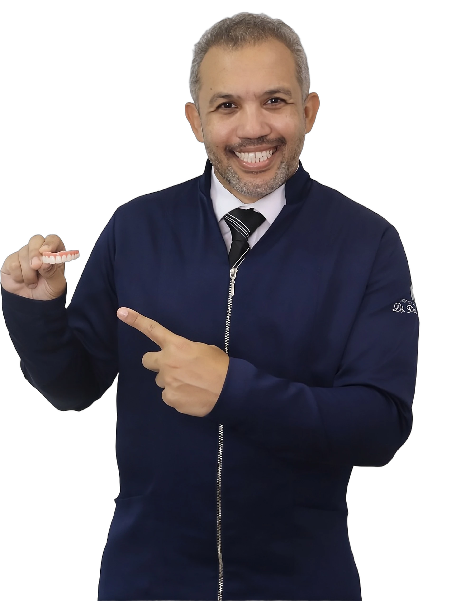

Mais de 15 anos de experiência e 8.000+ casos executados. Em um único dia você acompanha o passo a passo completo: planejamento, cirurgia, moldagem, instalação e acabamento.

Um único dia de imersão prática, mais bônus pra você não perder o que aprendeu depois do evento.
Você acompanha o Dr. Pablo executando o protocolo inferior completo, do planejamento ao acabamento, em tempo real.
Traga suas dúvidas de casos reais e pergunte direto pro Dr. Pablo durante a imersão.
Rever a imersão quantas vezes precisar, no seu ritmo, por até 12 meses na área de membros.
Envie casos reais e tire dúvidas com o Dr. Pablo por 30 dias depois do evento.